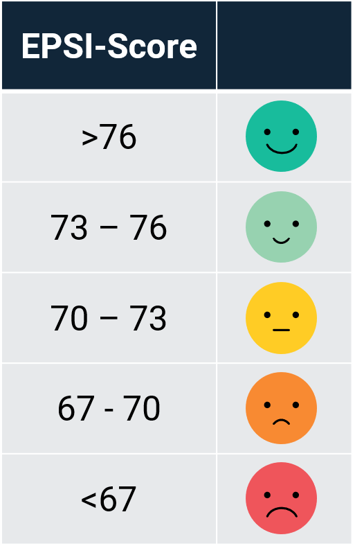

Vi vet at valg av boliglånsbank ikke kun handler om pris, men også hvordan banken behandler sine kunder. Kundetilfredshetsanalyser levert av uavhengige aktører som EPSI viser at det er store forskjeller i kundetilfredsheten mellom bankene.
Renteradar.no har tatt utgangspunkt i EPSI sin siste kundetilfredshetsanalyse. Kundetilfredsheten måles på en skala mellom 0 og 100. I praksis ender alle bedrifter opp med en score mellom 60 og 80 hvor 60 er svært dårlig og 80 er svært bra. Undersøkelsen for privatkunder i 2019 baserte seg på 2550 telefonintervjuer.
På tilbudskortene illustrerer vi kundetilfredsheten med «emojis» for at det skal være enkelt å forstå for brukeren. EPSI-scoren reflekteres etter denne skalaen:
